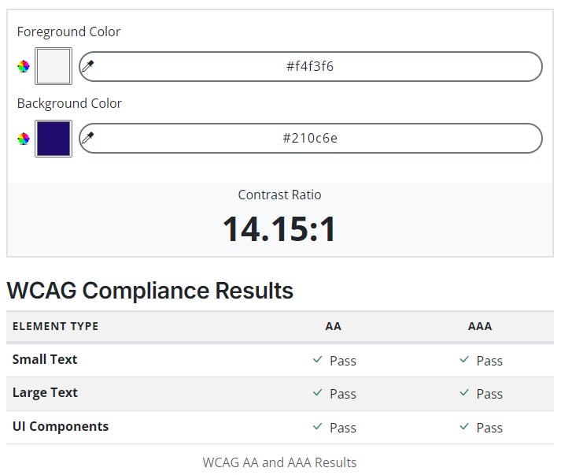
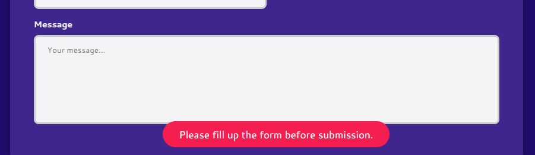
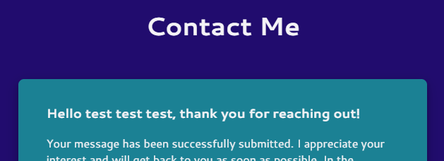
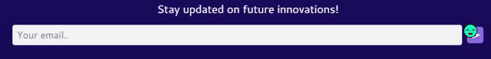
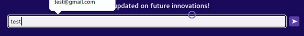

The essential story being told by my portfolio site is a narrative of growth, innovation and a deep commitment to sustainability as I envision my professional persona in 2034. This site represents a version of myself who has spent the past decade pushing the boundaries of technology to create impactful solutions that address some of the world’s most pressing environmental challenges. It showcases my journey from a Computer Science graduate to a recognised contributor in sustainable technology, with a portfolio that highlights several projects and visionary innovations.
The primary audience for my portfolio site includes:
Environmental Tech Companies: Organisations seeking collaboration with a seasoned expert in sustainable technology to develop innovative solutions for environmental challenges.
Industry Leaders and Innovators: Professionals in the tech and environmental sectors who are interested in partnering on cutting-edge projects or exchanging ideas on sustainability.
Students and Young Professionals: Aspiring developers and engineers who are passionate about sustainability and looking for guidance, mentorship and inspiration in their careers.
General Public and Environmental Advocates: Individuals who are interested in learning about the latest advancements in sustainable technology and how they can contribute to a greener future.
The site follows a flat structure, designed to ensure that all key content is easily accessible with minimal clicks. This layout reduces confusion and frustration by presenting a simple and intuitive navigation system. Visitors can easily locate content without getting lost in a hierarchy of nested pages.
Regardless of which page a user is on, they can always access other essential pages quickly through a universal navigation menu. This consistency fosters a sense of predictability, allowing users to trust they can easily navigate the site.
Steven Mengin’s portfolio stands out for its clean, minimalist design with a strong focus on typography and whitespace. This approach ensures that the content is the primary focus, with no unnecessary distractions. From his site, I learnt the importance of simplicity in design and how effective use of whitespace can enhance readability and user experience while maintaining elegance in design.
The subtle use of animations and interactive elements in Steven’s portfolio adds a dynamic aspect to the site without overwhelming the user. This inspired me to incorporate interactive features, such as animations and hover effects, that are subtle yet effective to make my site engaging while maintaining a professional tone.
Ante Franulovic’s site effectively conveys his personal brand through consistent visual elements and a clear narrative about his professional journey. I learnt the importance of creating a cohesive brand identity that reflects my professional persona, which I integrated into my site through consistent design elements and a distinct personal narrative.
Ante’s portfolio is highly responsive, providing an excellent user experience across all devices. This reinforced the need for a responsive design in my own site, ensuring that it is fully functional and aesthetically pleasing on different devices.
Suraj’s portfolio is well-organised, with content presented in a logical and easy-to-follow manner. Through studying his layout, I learnt to focus on the clarity and structure of my content, ensuring that visitors can easily find and understand the information presented on my site.
Suraj’s portfolio provides seamless user experience with its fast load times and smooth transitions. I was especially intrigued by his special landing page design which unveils the site’s introduction through scrolling. This inspired me to develop a unique interactive stage on my site’s homepage, where the site’s introduction can be revealed through user interaction.
The site uses a high-contrast colour scheme to enhance readability for all users, including users with visual impairments. Additionally, the font used are clean and legible across different devices, making the content accessible to users on different platforms and with various levels of vision. The design adheres to the WCAG (Web Content Accessibility Guidelines) standards for colour contrast and text readability.
Apart from relative units used in the site, the minimum font size used in main content is 16 CSS pixels, which follows the WCAG AA compliance. In addition, users can scale the text up to 200% without any loss of content or functionality.
All images on the site are accompanied by descriptive alt text which ensures that visually impaired users can understand the content and functionality of the site. This is especially important in the “works” page where each project section is supported by at least two graphic elements. For instance, an alt for one of the images used for Smart Energy Management System is "solar panels installed at a park used as shade for picnics" which efficiently and fully describes the image for users who do not have access to it, ensuring that they do not miss out on supporting information.
All forms on the site are designed with accessibility in mind, featuring clear labels, prompts, and focus states. In addition to form success messages, form error messages are provided in a clear manner, with text explanations to notify users of input errors in real-time, ensuring that users can interact with forms without confusion.
   The site features a clear and straightforward navigation menu that is consistent and accessible from every page. It takes only one click (two for smaller screens) to get from any one page to another. This allows users to easily find and access content without having to search or click through multiple layers, enhancing the overall user experience.
The site provides immediate and clear feedback for user interactions, such as clickable buttons, form submissions and hover effects. For instance, when a user hovers over a link or a button, the change in cursor design indicates that the element is clickable. Similarly, form submissions trigger validation messages, ensuring users understand what actions have been taken or need to be corrected, which improves the overall usability of the site.
The site is designed to flow on different screen sizes. The layout automatically adjusts to fit the window’s width, maintaining functionality on different devices and platforms. For example, each column of the footer stacks on top of another when the screen not wide enough to fit them linearly.
Touch-friendly elements such as buttons and links are optimised for mobile devices. For instance, the ‘hidden switch’ which activates the introduction on the homepage are immediately visible to users on smaller screens. The consideration of users on different screen sizes ensures that the site provides a seamless experience for all users.
I learnt how to integrate animations using the canvas element with p5.js into the website, handling dynamic animations like moving elements and interactive effects that could be restrictive in CSS. For example, the homepage requires users to interact with a hidden switch that, once activated, trigger animations and reveal further content. This type of interaction animation involves using p5.js to manipulate the canvas, respond to user actions, and animate elements based on scrolling, clicking or hovering. I achieved this through studying the p5.js references.
I learnt to create a contact form that uses submitted input to personalise the feedback. For instance, after a user submits the contact form, the form returns a custom message that begins with “Hi [name], thank you for reaching out!” This involves using JS to capture form data, validate it and dynamically update the feedback text. I achieved this by referring to the DOM Forms tutorial on W3Schools.
I learnt some CSS tricks that supported my implementation of the site. A notable one is how to use the calc() function in CSS and how it allows for the mix of units (e.g., percentages with pixels) for better control of styling and layouts. This is especially useful when creating flexible designs that adapt to various screen sizes. Other tricks include the use of flexbox for easier alignment and distribution of items within a container, and varied use of CSS transitions and animations to smoothly animate changes to CSS properties. I achieved the use of calc() through an online guide and others through W3Schools tutorials.
One aspect of my work which I found particularly successful is the colour scheme and branding of the website. These play a crucial role in shaping the site’s identity and professionalism. I chose dark background colours (deep blues and purples) to evoke a sense of modernity and sophistication, fitting for a technology-focused site. This contrasts well with the vibrant accents (like neon greens and purples) used to highlight interactive elements such as links, buttons and important sections. The consistent palette helps tie together different sections, creating visual harmony across the site, while reinforcing the branding and purpose behind each content.
Another aspect of my work which I think is particularly successful is the interactivity and user engagement. The website incorporates numerous interactive features that significantly enhance user engagement. From hover effects on images and videos to personalised feedback to smooth animations, these features create a sense of movement, enhancing user control and drawing users deeper into the content. These elements not only make the site visually appealing, but also engage users by rewarding interaction with immediate visual or functional feedback. This encourages exploration and keeps users engaged longer.
Although the overall website design is kept decluttered and light, the quality of images and videos used are not compromised, which may lead to slow load times, particularly for users with limited bandwidth. This is most evident on the “works” page where several projects are detailed and supported by high-resolution images and videos. As slower websites can increase user friction and frustration, performance optimisation may be necessary. I could look into compressing images, implementing lazy loading and considering using streaming services for faster load times.
Despite the responsive design considerations, touchscreen devices cannot make use of hover features that are designed for desktop interaction, making the site feel less interactive. I could look into creating touch-friendly events such as tap-to-reveal or swipe gestures to compensate for the lack of interactive feedback on touchscreen devices.
[1] W3Schools, 'W3Schools.com', 1999-2024. [Online]. Available: https://www.w3schools.com/. [Accessed: 7- Sep- 2024].
[2] MDN Web Docs, MDN Web Docs ', 1998-2024. [Online]. Available: https://developer.mozilla.org/en-US/. [Accessed: 7- Sep- 2024].
[3] p5js team, 'Reference', 2013-2024. [Online]. Available: https://p5js.org/reference/. [Accessed: 5- Aug- 2024].
[1] M.Edmondson, ‘Detect what page you are on JavaScript?’, 2013. [Online]. Available: https://stackoverflow.com/questions/16133491/detect-what-page-you-are-on-javascript. [Accessed: 6- Aug- 2024].
[2] user3413723, ‘Stop form refreshing page on submit’, 2014. [Online]. Available: https://stackoverflow.com/questions/19454310/stop-form-refreshing-page-on-submit. [Accessed: 9- Aug- 2024].
[3] C. Chris, ‘The CSS Calculating Function Guide’, 2024. [Online]. Available: https://css-tricks.com/a-complete-guide-to-calc-in-css/. [Accessed: 10- Aug- 2024].
[1] p5js team, 'Download', 2013-2024. [Online]. Available: https://p5js.org/download/. [Accessed: 5- Aug- 2024].
[1] W3C, 'Markup Validation Service', 2024. [Online]. Available: https://validator.w3.org/. [Accessed: 8- Sep- 2024].
[2] W3C, ‘CSS Validation Service', 1994-2009. [Online]. Available: https://jigsaw.w3.org/css-validator/validator.html.en. [Accessed: 8- Sep- 2024].